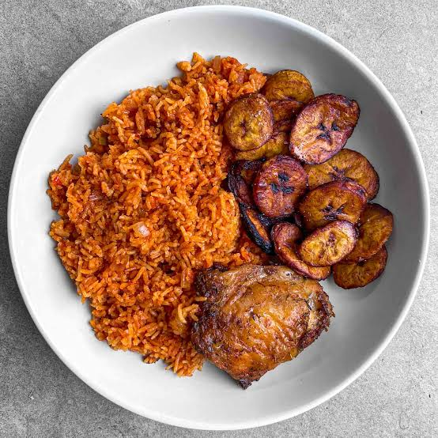

This is my go-to recipe for smoky Nigerian jollof that actually tastes like the one from owambes. The secret is in the pepper mix and letting it burn slightly at the bottom for that signature "party" flavor. Serves 6 people.

Ingredients
- 3 cups long grain parboiled rice
- 6 large tomatoes
- 3 red bell peppers (tatashe)
- 2 scotch bonnet peppers (atarodo)
- 2 medium onions, 1 sliced, 1 blended
- 1/2 cup vegetable oil
- 3 tablespoons tomato paste
- 2 teaspoons curry powder
- 2 teaspoons thyme
- 3 bay leaves
- 4 stock cubes
- 2 cups chicken stock or water
- Salt to taste
Instructions
- Blend tomatoes, red bell peppers, scotch bonnet, and 1 onion until smooth. Set aside.
- Wash rice with cold water until water runs clear, then parboil for 5 mins. Drain and set aside.
- Heat oil in a large pot. Add sliced onions and fry until translucent.
- Add tomato paste and fry for 5 mins, stirring constantly so it doesn't burn.
- Pour in blended pepper mix. Cook on medium heat for 15-20 mins until it reduces and oil floats to the top.
- Add curry, thyme, bay leaves, stock cubes, and salt. Stir well.
- Add chicken stock. Taste the stew - it should be slightly saltier than you want the rice.
- Add parboiled rice and stir gently to coat with stew. Add water if needed - liquid should be just 1 inch above rice.
- Cover pot with foil, then the lid. Cook on low heat for 30 mins. Don't open it!
- After 30 mins, check. If rice is soft and there's a slight burn smell, it's perfect party jollof.
- Turn off heat and let it steam for 10 more mins before serving with plantain.